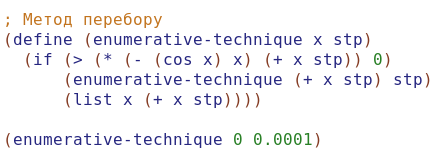
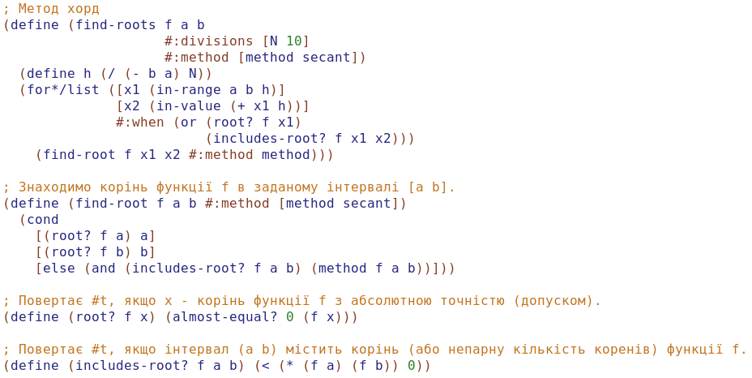
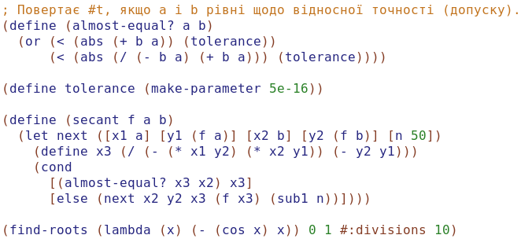
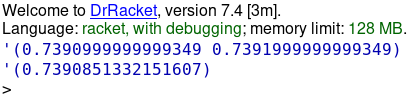
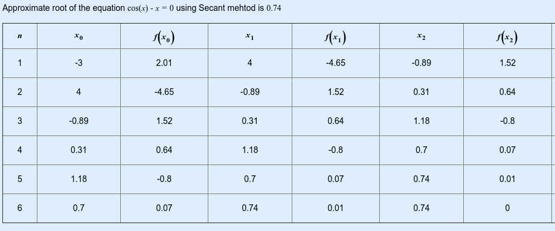

Лабораторна робота 3. Форми lambda та let
Завдання:
Написати процедури, що обчислюють задану функцію за допомогою lambda та let виразів
Варіант 5. Розв’язати нелінійне рівняння x=cos(x) методами перебору та хорд, визначивши інтервал [a, b], на якому існує рішення рівняння. Порівняти результати розв’язків двома методами.
Алгоритм програми:
Метод перебору:
- Суть методу полягає в тому, що спочатку задається якесь наближення x (бажано зліва від передбачуваного кореня) і значення кроку h
- Потім, поки виконується умова f(x) * f(x + h) > 0, значення x збільшується на значення кроку x = x + h
- Як тільки умова перестала виконуватися - це значить, що рішення нелінійного рівняння знаходиться на інтервалі [x; x + h]
Метод хорд:
- Для початку вибираються дві довільні точки на осі x (x0, x1)
- Потім через дві точки (x0, F(x0)) і (x1, F(x1)) проводиться хорда. Ця хорда перетинає лінію y = 0 в точці x2. Ця точка вважається першим наближенням до кореня
- Далі, якщо |F(x2)| > eps чи |(x0 - x1)| > eps (eps - задана похибка в обчисленні кореня), тоді точки x1 і x2 вибирають в якості нових стартових точок, тобто x0 = x1, x1 = x2
- Знову проводимо хорду і процес повторюється
- Критерієм закінчення ітераційного прцесса вважається достатня близькість модуля значення функції |F(x2)| до нуля, а також досить близькі значення двох наближень до кореня x0 і x1
Код програми:



Скрін-шот результатів:

Аналіз достовірності результатів:

Висновки:
Під час виконання лабораторної роботи були вивчені форми lambda та let мови Scheme. Було розроблено програму, в якій реалізовано процедури, що обчислюють задану функцію за допомогою lambda та let виразів. Результати розв’язків двома методами майже не відрізняються.